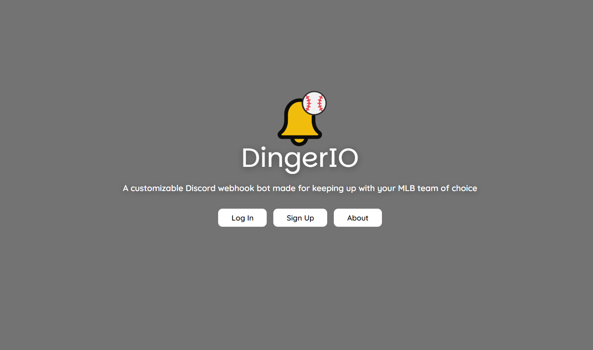
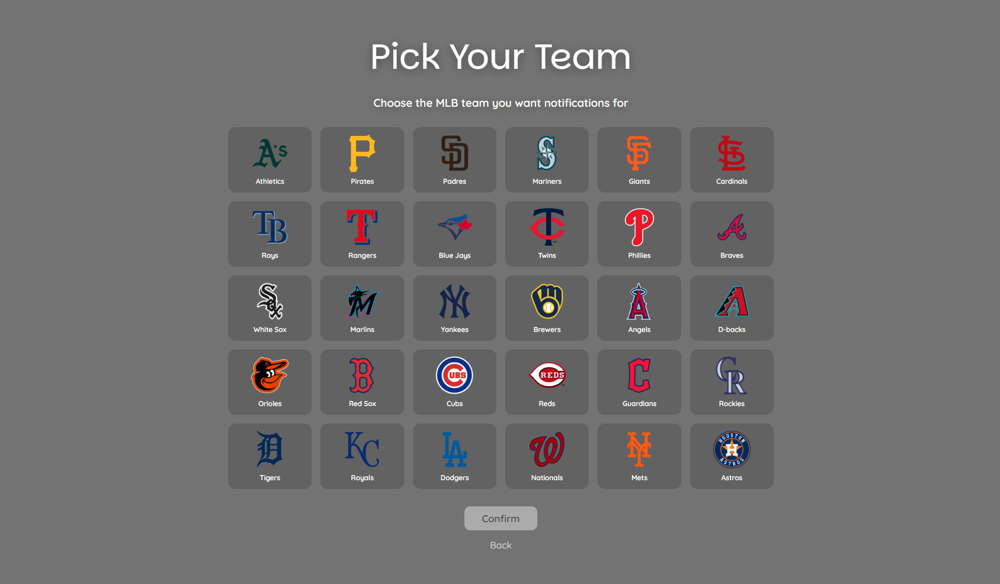
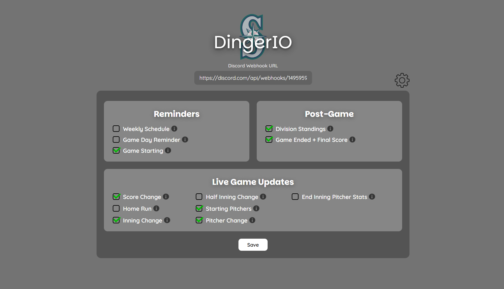
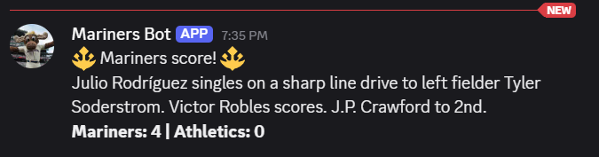
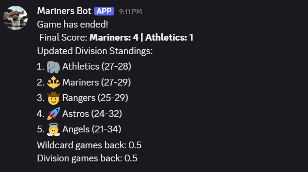

DingerIO Homepage
Summary
DingerIO is a personalized MLB notification service that delivers live game updates directly to your Discord server. With 162 games in a season, keeping up with your MLB team's performance, standings, and playoff positioning can become a tedious task. DingerIO eliminates that by automatically pushing the updates that matter most to you. No more manually checking scores, standings, or if your favorite player has made any runs. Just connect your Discord server, subscribe to your team, and choose the events you want to be notified on.
Although DingerIO is still under active development and has not yet been deployed to the web, it is fully functional in a local environment and remains one of the projects I am most proud of to date.
Technical Stack
- Java / Spring Boot: backend application and scheduling
- PostgreSQL: persistent storage for users, teams, players, and subscriptions
- Official MLB Stats API: source for live game data and roster information
- Discord Webhooks: delivery channel for real-time notifications
- React: frontend dashboard for managing notification preferences
- Vite: frontend build tool and development server
- Maven: build and dependency management
- Docker: containerized the local PostgreSQL database for development
- JWT (JSON Web Tokens): stateless user authentication
How It Works
On startup, DingerIO syncs all 30 MLB teams and their rosters into a local database. From there, two scheduled processes run in the background. The first sends users a weekly preview of their team's upcoming games every Monday. The second is the core polling loop, running every 15 seconds throughout the day.
Each cycle fetches that day's schedule and routes each game through one of three handlers based on its status. Pre-game sends a reminder hours before first pitch and again when the game is about to start. Live game fetches the real-time feed and compares it against a stored state if anything changed (a run scored, pitcher swap, inning ended), the appropriate notification fires. Post-game delivers the final score and standings if enabled. Postponed games are also caught and users are notified.
To prevent duplicate alerts, each game tracks a state object recording the current score, inning, and pitchers. A notification only fires when a change is detected from the previous state.
Challenges & Accomplishments
Accomplishments
- Built a fully working end-to-end application covering the backend, database, and frontend entirely independently
- Designed a flexible event-driven notification system with granular user control over what gets sent
- Integrated three external systems (MLB Stats API, PostgreSQL, and Discord webhooks) seamlessly
- Implemented stateless JWT authentication from scratch with a custom Spring Security filter
- Built a background polling service that reacts to live game events with no user interaction required after setup
Challenges
- The MLB Stats API has no official documentation, so figuring out the right endpoints, response structure, and deeply nested JSON fields required extensive trial and error along with building a large number of DTOs
- Preventing duplicate notifications by designing an in-memory GameState object to track what has already been sent, so users are not spammed every 15 seconds when the same game data comes back